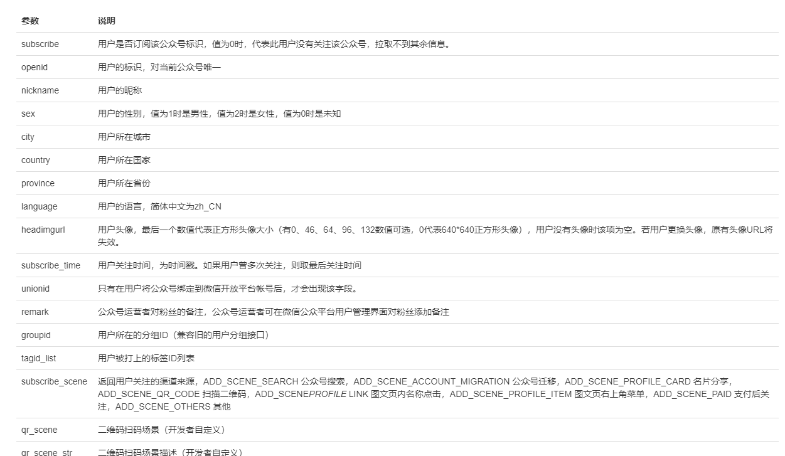
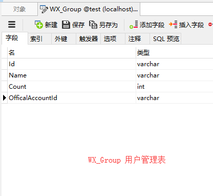
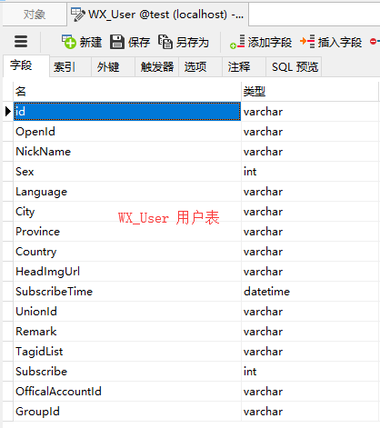

前言：
微信公众号提供了用户和用户组的管理,我们可以在微信公众号官方里面进行操作，添加备注和标签,以及移动用户组别，同时,微信公众号提供了相应的接口方便我们调用，可方便的把用户同步到本地,这样我们可以自己为用户定义更多的信息，以及与本地的业务更好的对接起来。以方便做各种应用分析。所以本节内容主要是用户和用户组的管理。
开始：
一、用户关注与退订事件：
在之前的消息处理中，我们在UserMessageHandler.cs，需要继承Senparc.Weixin.MP.MessageHandlers<TC>这个抽象类,并重写所有方法，在这里面，我们可以添加2个事件，一个是用户关注时候触发事件，一个是退订时候触发事件
public override IResponseMessageBase OnEvent_ScanRequest(RequestMessageEvent_Scan requestMessage)
{
//通过扫描关注
var responseMessage = CreateResponseMessage<ResponseMessageText>();
responseMessage.Content = responseMessage.Content ?? string.Format("通过扫描二维码进入，场景值：{0}", requestMessage.EventKey);
return responseMessage;
}
/// <summary>
/// 订阅（关注）事件
/// </summary>
/// <returns></returns>
public override IResponseMessageBase OnEvent_SubscribeRequest(RequestMessageEvent_Subscribe requestMessage)
{
var responseMessage = base.CreateResponseMessage<ResponseMessageText>();
responseMessage.Content = "欢迎关注";
return responseMessage;
}
/// <summary>
/// 退订
/// 实际上用户无法收到非订阅账号的消息，所以这里可以随便写。
/// unsubscribe事件的意义在于及时删除网站应用中已经记录的OpenID绑定，消除冗余数据。并且关注用户流失的情况。
/// </summary>
/// <returns></returns>
public override IResponseMessageBase OnEvent_UnsubscribeRequest(RequestMessageEvent_Unsubscribe requestMessage)
{
var responseMessage = base.CreateResponseMessage<ResponseMessageText>();
responseMessage.Content = "有空再来";
return responseMessage;
}二、设计数据库
根据微信公众号开发文档，用户管理对应字段而建立，基本与官方提供的用户信息是一样的

建立用户组管理表(WX_Group)和用户表(WX_User)
 
三、提交同步数据
接口的实现方式我们使用了开源的Senparc.Weixin提供的专业的微信操作SDK来快速完成操作，在Senparc WX SDK下的Senparc.Weixin.MP.AdvancedAPIs ，通过OpenID到公众号同步到数据，再将本地数据修改。
/// <summary>
/// 同步数据
/// </summary>
/// <param name="id">用户id</param>
/// <param name="officeId">对应的公众号id</param>
/// <returns></returns>
[HttpPost]
[SupportFilter]
public JsonResult SyncUser(string id,string officeId)
{
if (!string.IsNullOrWhiteSpace(id))
{
//填充数据
string[] arrs = id.Split(',');
List<BatchGetUserInfoData> list = new List<BatchGetUserInfoData>();
foreach (var m in arrs)
{
list.Add(new BatchGetUserInfoData() {
openid = m,
lang = "zh-CN",
LangEnum = Senparc.Weixin.Language.zh_CN
});
}
//批量同步数据
WC_OfficalAccountsModel accountModel = account_BLL.GetById(officeId);
var batchList = Senparc.Weixin.MP.AdvancedAPIs.UserApi.BatchGetUserInfo(accountModel.AccessToken, list);
foreach (var info in batchList.user_info_list)
{
WC_UserModel userModel = m_BLL.GetById(info.openid);
if (userModel != null)
{
userModel.City = info.city;
userModel.OpenId = info.openid;
userModel.Id = info.openid;
userModel.HeadImgUrl = info.headimgurl;
userModel.Language = info.language;
userModel.NickName = info.nickname;
userModel.Province = info.province;
userModel.Sex = info.sex;
m_BLL.Edit(ref errors, userModel);
}
}
LogHandler.WriteServiceLog(GetUserId(), "Ids:" + id, "成功", "删除", "WX_User");
return Json(JsonHandler.CreateMessage(1, Resource.SaveSucceed));
}
else
{
return Json(JsonHandler.CreateMessage(0, Resource.SaveFail));
}
}通过以上方式，将用户和分组的方式同步提交，实现用户的分组。
总结：
1.实现用户的分组，能更好的对关注者进行管理和分析业务应用
2.使用了开源的Senparc.Weixin，可以快速的实现分组和同步数据
3.参考官网示例源代码